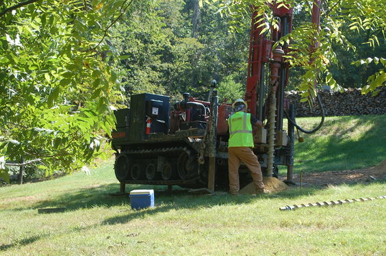
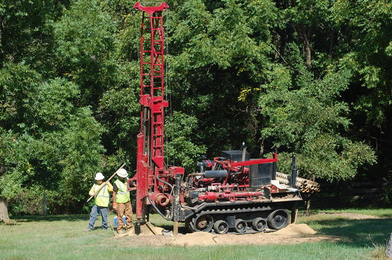
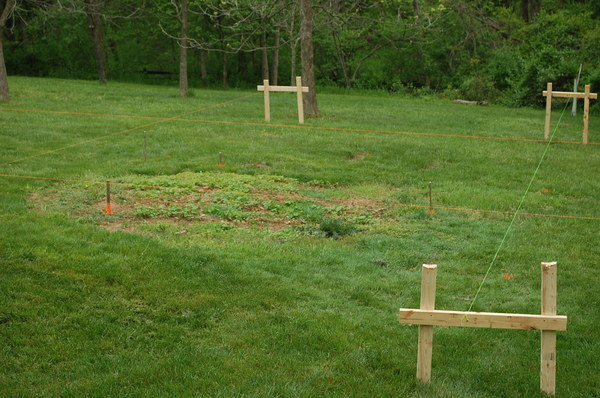
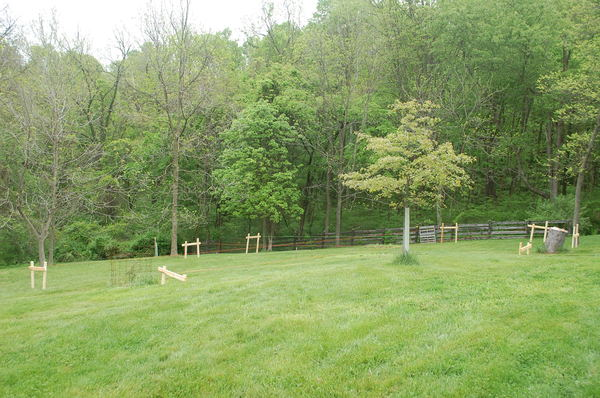
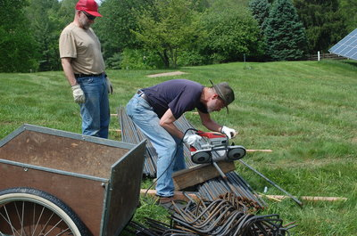

|
Home About VSI What We Do Who We Are Contact Info Resources Blog Data Archives Export |
Tower ConstructionFoundation Planning and PreparationTower SitingThe location of the tower is constrained by a number of considerations:
Geotechnical ReportThe geotechnical boring was done on September 18 by Hillis-Carnes. They used a special track driven drilling rig designed to take soil samples at multiple depths. Over a period of several hours three separate boreholes were drilled with samples taken at multiple depths from each borehole.  
Foundation DesignAs of February 2016 we have the final engineering design and the anchor bolts and "template kit"; the latter being a metal framework to hold the three sets of anchor bolts in position as the concrete is poured around them. Unfortunately the specifications for installation of the anchor bolts have not been supplied yet (apparently there is a "ANCHOR BOLT LAYOUT DRAWING" that should have been supplied but wasn't). This has been requested from the tower manufacturer, Rohn, and after a week and a reminder still no reponse. The very slow responsiveness from Rohn has already extended the timeline for this project considerably.Most of the planning for the foundation is done. The excavation will be done by Mike Roderick. A custom concrete mix to satisfy the design requirements has been specified by TBH. Rebar and Sonotubes will come from Frederick Brick Works. The 120v electrical circuit will be installed by Chuck LoSchiavo of Gateway Electric. Only two items remain; the missing specifications on the anchor bolt installation and finding a crane service that has a suitable crane for the uneven terrain and the height and weight (9,000lb) of the tower.
LayoutIt's now May 2016, all the planning issues have been addressed and the ground is finally getting dry enough to allow concrete delivery. Jay Bubel of TBH visited the site and concluded that they would be able to drive right up to the excavation, though he said he wouldn't send just any of their drivers. A complete list of materials (rebar, Sonotube, etc.) was prepared with Frederick Brick Works and is ready for delivery. After closely watching the weather Mike Roderick is scheduled to begin the excavation on Sunday May 15. Batten boards and stringlines have been placed to outline the foundation footprint:  Note the stringlines are not level; to do so would have had some of the batten boards about twelve feet in the air. Instead the stringlines all lie in an inclined plane, with the four corner intersections vertically above the level (horizontal) projection of the footprint. As a result the stringlines define a rectangle in the plane of the stringlines, not the square 18'-6" by 18'-6" of the foundation mat. Doing non-level stringline like this turns out to be considerably more tedious that laying out a level one.  The rebar (most of it) was delivered on Saturday May 14 along with the round pier forms and concrete block (CMU). Since the pier forms basically consist of cardboard they shouldn't be exposed to rain any more than necessary, so we put them in a garage bay safely out of the weather until needed. We had 96 pieces of #7 rebar (7/8" diameter) 20' long that needed to be trimmed to 18'. Rebar can be hard to cut because it is made of recycled mystery metal that can have very hard areas that trash saw blades. Cutting with an abrasive disk is messy and slow, so I was hoping to make those cuts with a portable bandsaw. In preparation I bought six blades and checked that I could buy more locally. My brother was visiting and helped with the rebar cutting; it turned out we made all 96 cuts with a single blade, though it was showing a little wear at the end. In total there will be about 4,400 lbs of metal in the foundation, embedded in about 103,000 lbs of high strength concrete. The bottom 18'-6"x18'-6" foundation mat will be covered with 83 cubic yards of dirt weighing about 270,000 lbs. So the 9,000 lbs (4,100kg) of tower structure above ground is anchored by a 377,000 lb (171,000kg) foundation. If this tower ever falls I don't think it will be due to foundation failure. |
|
|